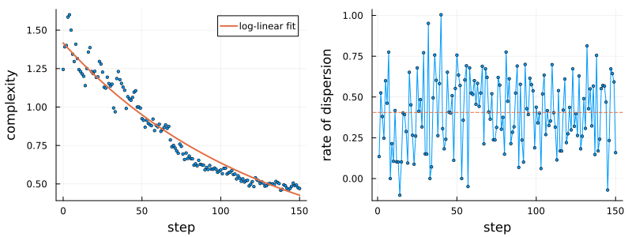
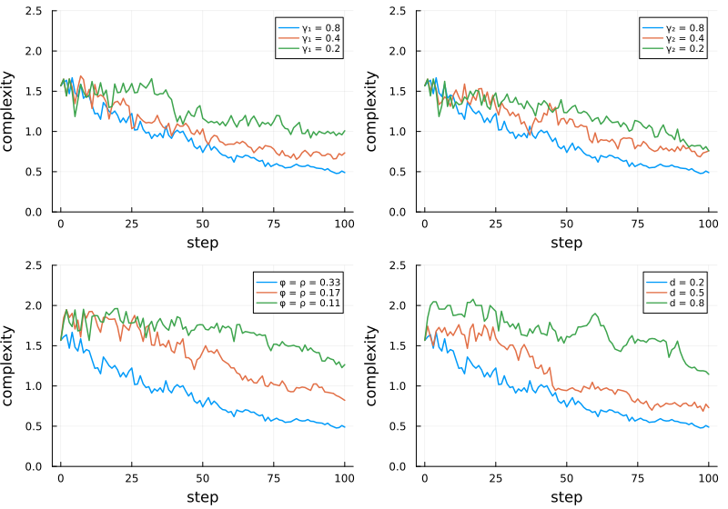
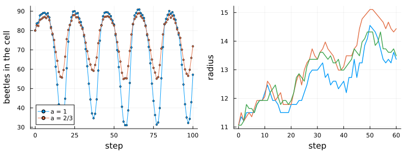

Mountain pine beetles across scales
Simon Frost
- Overview
- The model
- A spreading infestation
- Three regimes
- Parameter sweeps
- Seasons
- From endemic to epidemic
- Barriers and wind
- Deviations from the source
Overview
The mountain pine beetle, Dendroctonus ponderosae, has killed pine across millions of hectares of western North America. Its outbreaks join two scales: beetles breed and die within a stand, and disperse between stands. Liu and Estep (2025) built a cellular automaton on a grid of hexagons that couples the two. Within each cell, the number of beetles follows a birth-death process; between cells, the more infested cells of a cluster give up part of their density, which is shared among the cells drawn into the dispersal, some of which fail to establish. The authors explore the patterns this produces: their complexity, how fast they spread, and how they respond to the parameters, to seasons, to barriers and to wind.
This implementation is a reproduction of the model as the authors’ released code runs it. Where the code and the article differ, the code is followed and the article’s version is an option; the differences are listed at the end.
ENV["GKSwstype"] = "100"
using EcologicalCellularAutomata
using CellularAutomataCore
using Plots
using StatisticsThe model
The lattice is m × n hexagons, odd columns half a cell lower than even ones, with absorbing edges. Each cell holds a normalised beetle density between 0 and 1. A step has two parts:
- Microscale (the model’s rule): starting from
density × 100beetles, 20 independent runs of a birth-death process of 100 small steps each, with birthsb x (1 - x/100)and deathsd xper unit time, are averaged. - Macroscale (a callback stored with the problem): the affected cells and their neighbours form an interaction neighbourhood. Each cell is drawn into the dispersal with probability
w d / (1 + w), wherewcounts its affected neighbours (plus 1 if affected itself) anddis its largest difference in density from a neighbour. Of the cells drawn, those at or above their mean density give up a shareγ₁of their excess, which is pooled and shared among all of them; the others receive it scaled byγ₂and keep it with probabilityφ + ρ atan(density), or lose all their beetles.
The defaults are the article’s: b = 1, d = 0.2, γ₁ = γ₂ = 0.8 and φ = ρ = 1/3.
prob = problem(:mpb_multiscale; seed=1)
size(prob.u0.density), count(>(0), prob.u0.density)((50, 50), 45)We draw the hexagons as the source’s code does, and record the two statistics the article studies: the complexity of the pattern (edges between affected and unaffected cells per affected cell) and the radius of the circle with the affected area, whose change from step to step is the rate of dispersion.
const HEX = Shape([(cospi(k / 3), sinpi(k / 3)) for k in 0:5])
function hexmap(density; title="", colorbar=false)
m, n = size(density)
shapes = [Shape(HEX.x .+ 1.5 * (j - 1), HEX.y .+ sqrt(3) * (i - 1 + 0.5 * iseven(j)))
for j in 1:n for i in 1:m]
values = [density[i, j] for j in 1:n for i in 1:m]
return plot(shapes; fill_z=permutedims(values), c=cgrad(:RdYlGn; rev=true),
clims=(0, 1), linecolor=:match, linewidth=0, aspect_ratio=1,
axis=false, ticks=false, legend=false, colorbar, title,
titlefontsize=9)
end
function track(prob; snapshots=())
integ = init(prob; save_everystep=false)
stats = [(complexity=mpb_complexity(integ.u), radius=mpb_radius(integ.u))]
maps = Dict(0 => copy(integ.u.density))
while integ.t < prob.tspan[2]
step!(integ)
push!(stats, (complexity=mpb_complexity(integ.u), radius=mpb_radius(integ.u)))
integ.t in snapshots && (maps[integ.t] = copy(integ.u.density))
end
return stats, maps
end
logfit(c) = round.([ones(length(c)) 0:(length(c) - 1)] \ log.(c); digits=3)logfit (generic function with 1 method)A spreading infestation
The article’s Fig. 7 follows an infestation for 150 steps from a cluster of 45 cells, with a death rate of 0.4 (from the source’s code):
stats, maps = track(problem(:mpb_multiscale; seed=1, pmap=(; death=0.4));
snapshots=(50, 100, 150))
plot([hexmap(maps[t]; title="step $t") for t in (0, 50, 100, 150)]...; layout=(1, 4),
size=(900, 250))
The infestation spreads as a ragged blob with holes, at a density near the microscale’s equilibrium 1 - d/b = 0.6, and reaches the edges of the grid at about step 150, as in the article.
c = getfield.(stats, :complexity)
rate = diff(getfield.(stats, :radius))
p1 = scatter(0:150, c; ms=2, label="", xlabel="step", ylabel="complexity")
plot!(p1, 0:150, t -> exp(logfit(c)' * [1, t]); lw=2, label="log-linear fit")
p2 = plot(1:150, rate; marker=:circle, ms=2, label="", xlabel="step",
ylabel="rate of dispersion")
hline!(p2, [mean(rate)]; ls=:dash, label="")
plot(p1, p2; layout=(1, 2), size=(800, 300), left_margin=4Plots.mm,
bottom_margin=4Plots.mm)
fits = [logfit(getfield.(first(track(problem(:mpb_multiscale; seed=s,
pmap=(; death=0.4)))), :complexity))
for s in 1:3]
(fits=fits, early=round.(c[1:6]; digits=2), rate_mean=round(mean(rate); digits=2),
rate_lag1=round(cor(rate[1:(end - 1)], rate[2:end]); digits=2))(fits = [[0.348, -0.008], [0.356, -0.008], [0.306, -0.008]], early = [1.24, 1.39, 1.4, 1.58, 1.6, 1.5], rate_mean = 0.41, rate_lag1 = -0.06)The rate of dispersion fluctuates about a constant mean (0.45 in the article’s Fig. 8) with little memory from step to step, as the article finds (its tests do not reject white noise). Complexity declines log-linearly at about 1% a step, as in the article (ln c = 0.71 - 0.01 t), but starts lower: about 1.2 to 1.6 in the first steps here against about 2.2 to 2.5. The source’s released code, run with these settings, starts at 1.2 to 1.6 too, and agrees with this implementation in the number of cells affected and their density, so the article’s figure was presumably made with other settings. The parameter sweeps below, which start from a different cluster, match the article’s intercepts.
Three regimes
Depending on the parameters, the article finds infestations that grow without limit, settle to a pattern of roughly fixed size, or fade (its Fig. 10). After 40 steps from a cluster of 53 cells:
regimes = [("growth", (; death=0.2, gamma1=0.8, gamma2=0.8)),
("steady", (; death=0.6, gamma1=0.4, gamma2=0.2)),
("fading", (; death=0.8, gamma1=0.3, gamma2=0.2))]
ends = [track(problem(:mpb_multiscale; pattern=:endings, steps=40, seed=1, pmap=kw);
snapshots=(40,))[2][40] for (_, kw) in regimes]
plot(hexmap(mpb_pattern(:endings); title="start"),
[hexmap(e; title=name) for (e, (name, _)) in zip(ends, regimes)]...;
layout=(1, 4), size=(900, 250))
[(regime=name, affected=count(>(0), e),
mean_density=round(mean(filter(>(0), e)); digits=2))
for (e, (name, _)) in zip(ends, regimes)]3-element Vector{@NamedTuple{regime::String, affected::Int64, mean_density::Float64}}:
(regime = "growth", affected = 347, mean_density = 0.67)
(regime = "steady", affected = 56, mean_density = 0.33)
(regime = "fading", affected = 51, mean_density = 0.17)As in the article, the first grows, the second keeps its size, and the third keeps its cells at a low density, as its high death rate holds the microscale equilibrium at 1 - 0.8 = 0.2.
Parameter sweeps
The article varies one parameter at a time from a common cluster (its Figs 13, 15, 17 and 20) and fits the decline of complexity over 100 steps. One run each, as in the article:
sweeps = [("γ₁", :gamma1, (0.8, 0.4, 0.2)), ("γ₂", :gamma2, (0.8, 0.4, 0.2)),
("φ = ρ", :phi, (1 / 3, 1 / 6, 1 / 9)), ("d", :death, (0.2, 0.5, 0.8))]
function sweep_run(key, v)
kw = key === :phi ? (; phi=v, rho=v) : NamedTuple{(key,)}((v,))
return getfield.(first(track(problem(:mpb_multiscale; pattern=:sweep, steps=100,
seed=1, pmap=kw))), :complexity)
end
results = Dict((key, v) => sweep_run(key, v) for (_, key, vs) in sweeps for v in vs)
plot([plot(0:100, [results[(key, v)] for v in vs]; lw=1.5, ylims=(0, 2.5),
label=permutedims(["$label = $(round(v; digits=2))" for v in vs]),
xlabel="step", ylabel="complexity", legendfontsize=7)
for (label, key, vs) in sweeps]...; layout=(2, 2), size=(800, 560))
[(parameter=label, value=round(v; digits=2), fit=logfit(results[(key, v)]))
for (label, key, vs) in sweeps for v in vs]12-element Vector{@NamedTuple{parameter::String, value::Float64, fit::Vector{Float64}}}:
(parameter = "γ₁", value = 0.8, fit = [0.415, -0.012])
(parameter = "γ₁", value = 0.4, fit = [0.432, -0.009])
(parameter = "γ₁", value = 0.2, fit = [0.476, -0.005])
(parameter = "γ₂", value = 0.8, fit = [0.415, -0.012])
(parameter = "γ₂", value = 0.4, fit = [0.463, -0.008])
(parameter = "γ₂", value = 0.2, fit = [0.464, -0.006])
(parameter = "φ = ρ", value = 0.33, fit = [0.415, -0.012])
(parameter = "φ = ρ", value = 0.17, fit = [0.708, -0.009])
(parameter = "φ = ρ", value = 0.11, fit = [0.664, -0.003])
(parameter = "d", value = 0.2, fit = [0.415, -0.012])
(parameter = "d", value = 0.5, fit = [0.613, -0.01])
(parameter = "d", value = 0.8, fit = [0.714, -0.004])The article’s fits of ln c are 0.42 - 0.01 t for the common baseline; 0.53 - 0.01 t for γ₁ = 0.4; 0.5 - 0.01 t and 0.55 - 0.01 t for γ₂ = 0.4 and 0.2; 0.6 - 0.01 t for φ = ρ = 1/6; and nearly flat declines for γ₁ = 0.2 (c = 1.69 - 0.01 t), φ = ρ = 1/9 (c = 1.8 - 0.006 t) and d = 0.8 (c = 1.67 - 0.002 t). The baseline here matches, and the others agree in direction: dispersing less, surviving dispersal less, or dying more keep a pattern smaller and more ragged.
Seasons
The article makes the birth rate seasonal, multiplying it by 1 + a sin(2π t/20) for 20 steps a year (its Fig. 21): a = 1 in its formula, a = 2/3 in its code. Within a single cell, left alone, the number of beetles follows the seasons:
function lone_cell(amplitude)
lone = zeros(12, 12)
lone[6, 6] = 0.8
integ = init(problem(:mpb_multiscale; pattern=lone, n=12, steps=100, seed=1,
pmap=(; schedule=:periodic, amplitude, gamma1=0.0));
save_everystep=false)
beetles = [100 * integ.u.density[6, 6]]
while integ.t < 100
step!(integ)
push!(beetles, 100 * integ.u.density[6, 6])
end
return beetles
end
cells = Dict(a => lone_cell(a) for a in (1.0, 2 / 3))
p1 = plot(0:100, [cells[1.0] cells[2 / 3]]; marker=:circle, ms=2,
label=["a = 1" "a = 2/3"], xlabel="step", ylabel="beetles in the cell",
legend=:bottomleft)
spread = [getfield.(first(track(problem(:mpb_multiscale; pattern=:sweep, steps=60, seed=s,
pmap=(; schedule=:periodic, death=0.5,
gamma1=0.4, gamma2=0.4, phi=1 / 6,
rho=1 / 6)))), :radius) for s in 1:3]
p2 = plot(0:60, spread; lw=1.5, label="", xlabel="step", ylabel="radius")
plot(p1, p2; layout=(1, 2), size=(800, 300), left_margin=4Plots.mm,
bottom_margin=4Plots.mm)
(range_a1=round.(extrema(cells[1.0][21:end]); digits=0),
range_a23=round.(extrema(cells[2 / 3][21:end]); digits=0),
radius_at_60=round.([s[end] for s in spread]; digits=1))(range_a1 = (31.0, 91.0), range_a23 = (55.0, 89.0), radius_at_60 = [13.4, 14.4, 13.5])With the article’s amplitude the cell’s beetles swing between about 31 and 91, as in its Fig. 21a (30 to 85); the code’s amplitude gives a narrower swing. With the code’s amplitude and its settings for this figure (d = 0.5, γ₁ = γ₂ = 0.4, φ = ρ = 1/6), an infestation grows in steps, pausing in the lean season, from a radius of 11 to about 14 in 60 steps, as in the article’s Fig. 21b.
From endemic to epidemic
The article’s Figs 22 to 24 make both birth and death seasonal, with sharper seasons, and raise the birth amplitude and lower the death amplitude after step 60: a change from an endemic to an epidemic phase. The formulas and values are in the source’s code only.
outbreak = (; schedule=:outbreak, gamma1=0.5, gamma2=0.5, phi=1 / 6, rho=1 / 6)
runs = [track(problem(:mpb_multiscale; pattern=:sweep, steps=120, seed=s, pmap=outbreak);
snapshots=(60, 120)) for s in 1:3]
p1 = plot(0:120, [getfield.(r[1], :radius) for r in runs]; lw=1.5, label="",
xlabel="step", ylabel="radius")
vline!(p1, [60]; ls=:dash, color=:gray, label="")
plot(p1, hexmap(runs[1][2][60]; title="step 60"),
hexmap(runs[1][2][120]; title="step 120"); layout=grid(1, 3; widths=[0.4, 0.3, 0.3]),
size=(900, 280), left_margin=4Plots.mm, bottom_margin=4Plots.mm)
[(radius_60=round(r[1][61].radius; digits=1), radius_120=round(r[1][121].radius; digits=1))
for r in runs]3-element Vector{@NamedTuple{radius_60::Float64, radius_120::Float64}}:
(radius_60 = 12.6, radius_120 = 18.2)
(radius_60 = 13.5, radius_120 = 19.2)
(radius_60 = 13.0, radius_120 = 18.8)The radius creeps from 11 in the endemic phase and then grows faster, as in the article (about 13 at step 60 and 20 at step 120).
Barriers and wind
The article blocks dispersal with a barrier pierced by a bridge (its Fig. 18) and biases it with a wind (its Fig. 16). Blocked cells hold no beetles and are no one’s neighbours. With the code’s settings (d = 0.4, γ₁ = γ₂ = 0.6), an infestation starting west of the barrier:
barrier = falses(50, 50)
barrier[[1:16; 35:50], 13:35] .= true
start = zeros(50, 50)
start[:, 6:10] = mpb_pattern(:sweep)[:, 22:26]
column9 = view(start, :, 9)
column9[column9 .== 0.8] .= 0.4
wall = track(problem(:mpb_multiscale; pattern=start, blocked=barrier, steps=300, seed=1,
pmap=(; death=0.4, gamma1=0.6, gamma2=0.6)); snapshots=(150, 300))[2]
windy = track(problem(:mpb_multiscale; pattern=:sweep, steps=120, seed=1,
pmap=(; wind=:east, gamma1=0.6, gamma2=0.6)); snapshots=(120,))[2]
shade(d) = ifelse.(barrier, NaN, d)
plot(hexmap(shade(wall[150]); title="barrier, step 150"),
hexmap(shade(wall[300]); title="barrier, step 300"),
hexmap(windy[120]; title="wind to the east, step 120"); layout=(1, 3), size=(900, 290))
The barrier (blank) leaves the infestation only the bridge to cross. The wind towards the east keeps low-density cells upwind out of the dispersal, so the infestation grows only eastwards: the mean column of its cells, with and without wind, from the start’s 25:
centre(u) = round(mean(I[2] for I in findall(>(0), u)); digits=1)
calm = track(problem(:mpb_multiscale; pattern=:sweep, steps=120, seed=1,
pmap=(; gamma1=0.6, gamma2=0.6)); snapshots=(120,))[2]
(wind=centre(windy[120]), calm=centre(calm[120]))(wind = 33.9, calm = 24.8)Deviations from the source
foreach(d -> println("- ", d), model_info(:mpb_multiscale).deviations)- Where the source's released code differs from its article, the code is followed, as it made the figures: contributing cells keep their share of the pooled density without the factor gamma2 (gamma2_contributors = true follows the article); microscale populations start from density x capacity without rounding (integer_population = true rounds them, as the article defines them); a population below 1 is set to 0 at the start of each microscale step; densities are not capped at 1.
- The code pools all affected cells into one interaction neighbourhood; the article groups affected cells 'not separated by more than two non-affected cells' and the thesis links cells within two steps. linkage = 2 or 3 groups them; the default, 0, follows the code.
- Random numbers differ from the code's: each cell's microscale draws come from counter-based random numbers, and the dispersal from a generator seeded from the problem's seed and the time, so runs are reproducible but not draw for draw those of the source.
- With the settings of Fig. 7 (death rate 0.4), the complexity of the pattern falls from about 1.4 to 0.5 over 150 steps (ln c = 0.35 - 0.008 t) rather than from about 2.2 (0.71 - 0.01 t in Fig. 8), while the parameter sweeps, which start from another pattern, match the article. The source's released R code, run with the same settings, starts the same way (1.2 to 1.6 over the first 12 steps in three runs) and agrees with this implementation in the cells affected and their density, so the article's figure was presumably made with other settings or another starting pattern.
- Periodic birth multiplies the birth rate by 1 + amplitude sin(2 pi t / 20), with amplitude 2/3 by default, as in the code; the article's formula has amplitude 1. A single cell swings between about 31 and 91 beetles with amplitude 1, as in Fig. 21a (30 to 85), and between 55 and 89 with 2/3; the radius of Fig. 21b (11 to 14 in 60 steps) matches the code's amplitude and settings (death rate 0.5, gamma1 = gamma2 = 0.4, phi = rho = 1/6).
- The endemic-to-epidemic schedule of Figs 22-24 and its values are given only in the code and are taken from it.
- Wind follows the code: the inclusion probability of cells below the neighbourhood's mean density and upwind of its centre is multiplied by 0.05; the article describes also raising the inclusion of high-density upwind cells and changing downwind ones, without values.
- The calibration (Figs 25-27), by the BET package against simulated data and an aerial-survey image with no stated licence, is not reproduced.Liu, Yanjun, and Donald Estep. 2025. “A Multiscale Stochastic Cellular Automata Model for Dispersion of Mountain Pine Beetles.” Royal Society Open Science 12 (6): 241934. https://doi.org/10.1098/rsos.241934.